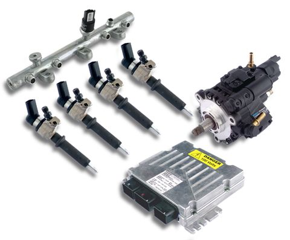

|  |
2008-ban a Siemens gyártmányú dieselbefecskendezõ-rendszerek bevizsgálását, javitását is megkezdtük, mint hivatalos Siemens VDO diesel márkaszerviz. A magasnyomású szivattyúk teljeskörûen javíthatók, diagnosztizálható. Ezt a speciális gyári szerszámok mellett a Hartridge AVM2 próbadra telepített programmal végezzük el, ami a magasnyomású teszt mellett a menyiségi- és nyomásszabályozó szelepek mûködését is ellenõrzi. A Siemens Piezo cr. injektorok bevizsgálást a Hartridge gyártmányú CRI-PC berendezéssel vizsgáljuk. A porlasztók jelenleg még nem javithatók, csak tisztíthatók: meghibásodás esetén cserélni kell õket. Szervizünk foglakozik új Siemens szivattyúk és injektorok forgalmazásával is. |